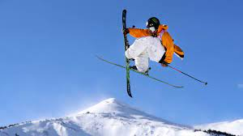

My favorite season for avtivites. Drum Roll please...... WINTER!!!
 Finally we get to my favorite season for activities. Winter personally is my favorite season primarily becasue of one activity that I have been doing my whole life. Since I was able to walk my parnets have taken my family skiing. These are very fond moments for me and have made winter and all that it brings really special to me. Luckily in Montana and more specifically Helena we are surrounded by awesome ski mountians. My favorite are Great Divide because of its proxikity to Carroll and Showdown becasue of its great snow and massive dumps. Not only is my favorite hobby in winter but my favorite sport as well. I am a big basketball fan. I love to play and watch. Carroll College is a great place to watch basketball. Both the men and women are top ranked national teams in the NIAA and are a blast to watch. Speaking of sports a fun activity that I recently found out about is hockey. In Helen we have a Tier 3 junior A hockey team called the BigHorns. They are a blast to watch. I have seen people watch their first came and get converted to hockey fans. It is truly a fun expeirence. What else is there to say Winter is a pretty kick ass season with tons of activities for all ages.